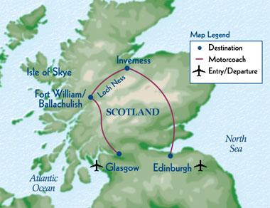

Castles of Scottland
Itinerary
- Day 1: Arrive in Edinburgh
- Day 2: Tour of Edinburgh Castle
- Day 3: Trip to Stirling Castle
- Day 4: Trip to Inverness
- Day 5: Second Day in Inverness
- Day 6: Trip to Loch Ness and Fort William
- Day 7: Free Day
- Day 8: Trip to Castle Stalker and Oban
- Day 9: Boat to the Isle of Skye
- Day 10: Trip to Balmacara Castle
- Day 11: Train to Perth
- Day 12: Train to Edinburgh
- Day 13: Second Day in Edinburgh
- Day 14: Edinburgh departure

Do you like castles? The Castles of Scotland Tour is for you. The tour visits 15 different castles in central and northern Scotland. The tour starts with the famous Edinburgh Castle, and Travel Scotland! has a special arrangement to visit parts of the castle normally closed to the public.
From Edinburgh you travel to Stirling Castle with breathtaking views of the River Forth as it divides Scotland's Highlands and Lowlands. Inverness is next on the Itinerary with a side trip to Culloden to view where the campaign of Bonnie Prince Charlie came to an end.
Look for Nessie from Castle Urquhart on the banks of Loch Ness. From there goes into the heart of the Highlands with trips to Fort William and Oban. We've made special plans to picnic by Castle Stalker near Glencoe.
No castle tour would be complete with a trip to Balmacara Castle on the Isle of Skye. While on Skye, we'll have a boat trip along the feet of the Black Cullins.
The tour leaves departs from London, taking an overnight train to Windemere, your gateway to the Lake District. Take some time to peruse the local shops or hike the mountains, following in the footsteps of William Wordsworth. With a week in the Lake District, you'll have plenty of time to discover all of its charms and wonders.
The tour concludes with two days back in Edinburgh for shopping, additional site-seeing, or just rest and relaxation.
| Castles of Scotland | • | Edinburgh | • | Loch Ness | • | Glasgow |
• 1-(800)555-8110 •